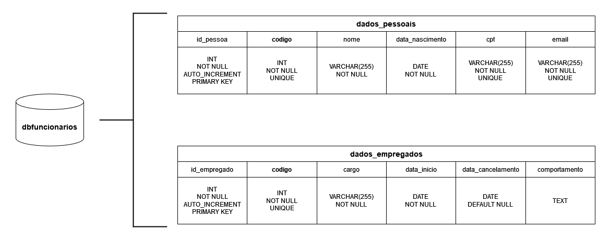

Visão Geral
RegistrosFuncionariosAPI 
Esta Interface de Programação de Aplicação (API) proporciona as 4 principais operações para controlar registros de funcionários em um banco de dados SGBD MySQL, o famoso CRUD.
Create - Operação para cadastrar um registro
Read - Operação para consultar um registro
Update - Operação para modificar um registro
Delete - Operação para anular um registro
Rotas da API
Rotas (endpoint) para acesso à RegistrosFuncionariosAPI:
-
Home
-
Swagger/OpenAPI
URLhttps://registros-funcionarios-api.luishperna.com.br/docsURLhttps://registros-funcionarios-api.luishperna.com.br/openapi.json -
Status
-
Cadastros
URLhttps://registros-funcionarios-api.herokuapp.com/funcionarios/cadastros -
Consultas
URLhttps://registros-funcionarios-api.herokuapp.com/funcionarios/consultas -
Modificações
URLhttps://registros-funcionarios-api.herokuapp.com/funcionarios/modificacoes -
Anulações
URLhttps://registros-funcionarios-api.herokuapp.com/funcionarios/anulacoes
Compatibilidade da API
A RegistrosFuncionariosAPI utiliza do formatado JSON para realizar as comunicações entre os sistemas, assim facilitando o tráfego de dados entre aplicações distintas e havendo um ponto em comum entre diversas linguagens de programação.
Métodos da API
A API utiliza de 4 métodos de requisição HTTP responsáveis por indicar as ações a serem executadas para um dado recurso.
POST - Método utilizado para criar um recurso
GET - Método utilizado para pegar um recurso
PATCH - Método utilizado para atualizar uma parte de um recurso
DELETE - Método utilizado para excluir um recurso
Banco de Dados Desenvolvido para a API
Estrutura do Banco de Dados
A estruturação do banco de dados foi criada para receber os principais dados dos funcionários, como mostrado na tabela abaixo:
| Dados do funcionário | Aceitação de valores duplicados | Obrigatoriedade |
|---|---|---|
| Código de identificação | ❌ | ✔️ |
| Nome | ✔️ | ✔️ |
| Data de nascimento | ✔️ | ✔️ |
| CPF | ❌ | ✔️ |
| ❌ | ✔️ | |
| Cargo | ✔️ | ✔️ |
| Data de início ou entrada | ✔️ | ✔️ |
| Data de cancelamento | ✔️ | Aceita valor NULL |
| Comportamento | ✔️ | Aceita string vazia |
Modelagem do Banco de Dados
A API integra com um banco de dados SGBD MySQL hospedado e modelado unicamente para está aplicação.
A imagem a seguir exibe mais detalhamento da modelagem implementada:
